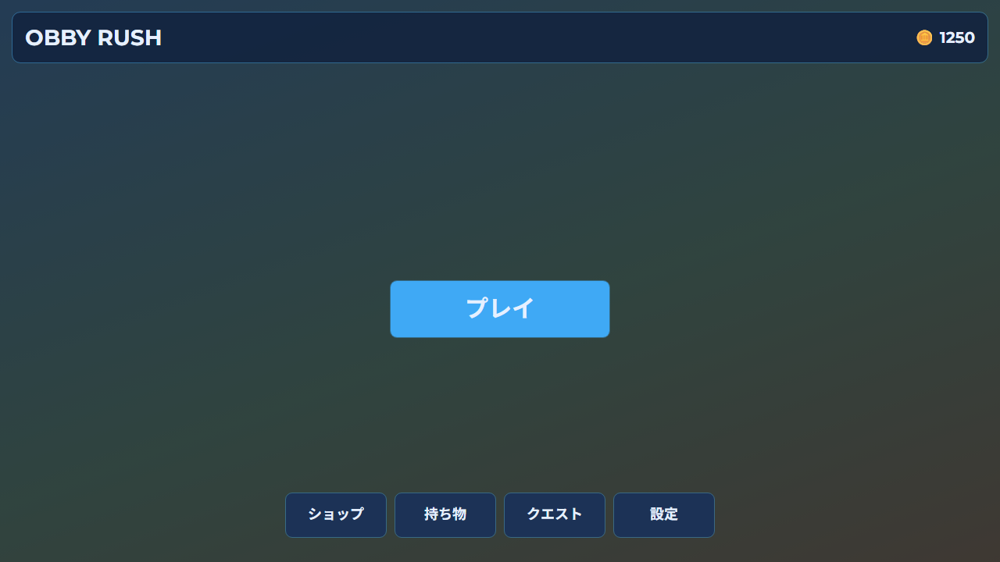
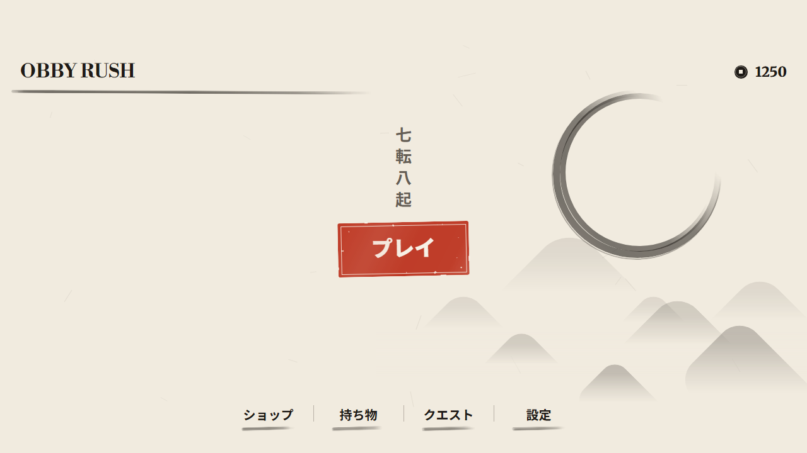
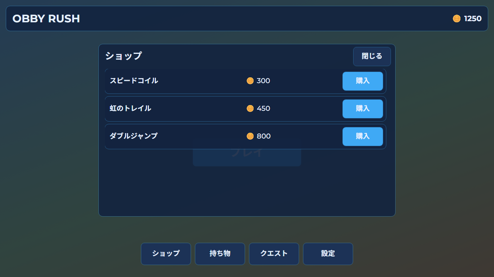
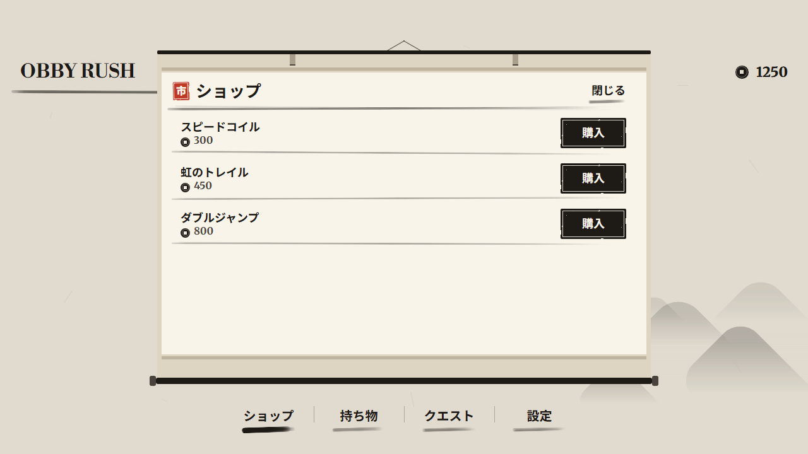
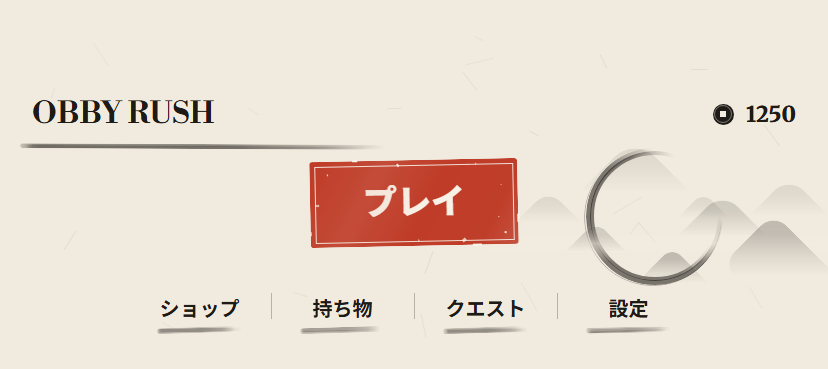
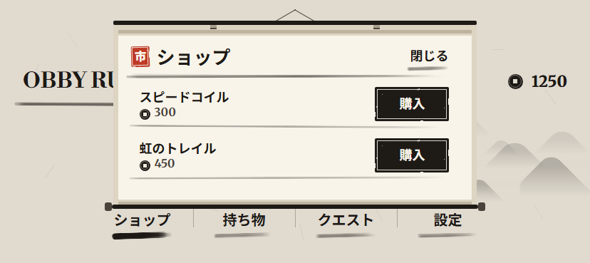
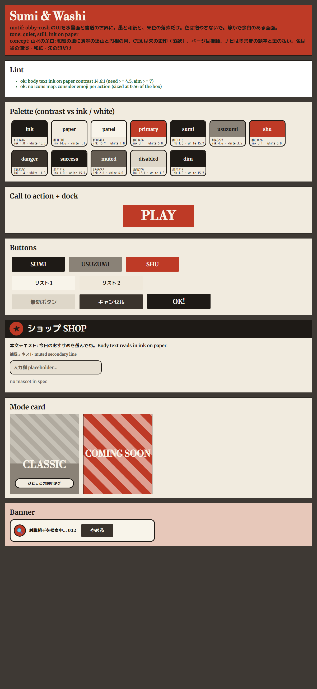

水墨画と書道の世界。墨の濃淡と和紙、朱色の落款だけ。画面は Lune でメニューを実際に組み立て（プロジェクトのモック）、 その GUI ツリーを Roblox の配置規則で描画したものです。Studio の実画面ではありません（Studio は未使用）。 各画像のリンク先は同じ描画の HTML です。






spec の lint と配色の確認用（style-board.html）。モード札・バナーはスクリプトの汎用テンプレートで、この画面のデザインではありません。
